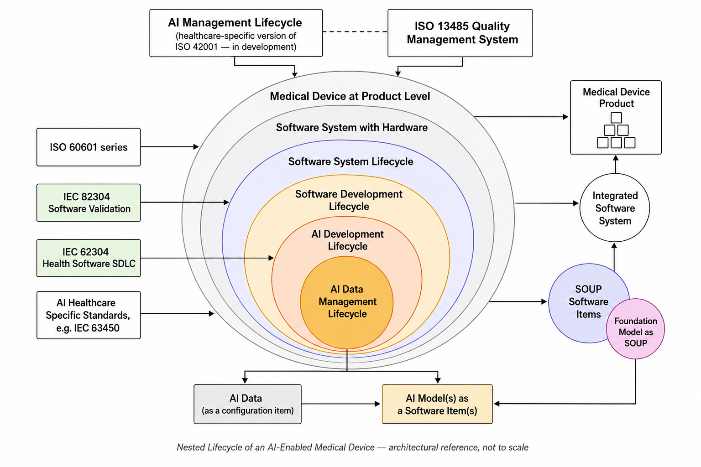

Offline, deterministic decision-support for mapping and tracing the nested development and lifecycle processes of AI-enabled medical devices — FDA + EU MDR. No AI in the assessment logic; every rule is human-authored and readable.

Decision-support only — not a conformity assessment, certification pathway, legal opinion, or substitute for qualified regulatory judgment. Part of the Compass family: RegCompass · CyberCompass · eIFUCompass · ClinicalCompass.